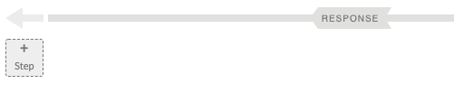
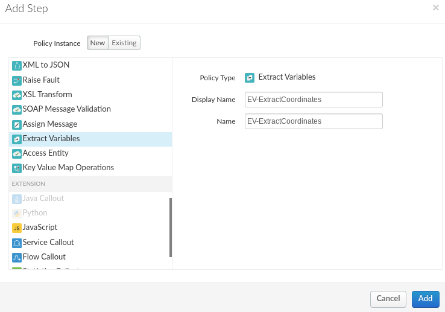
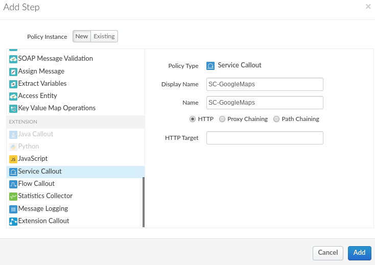
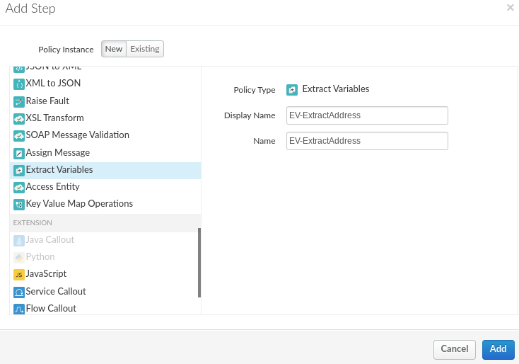
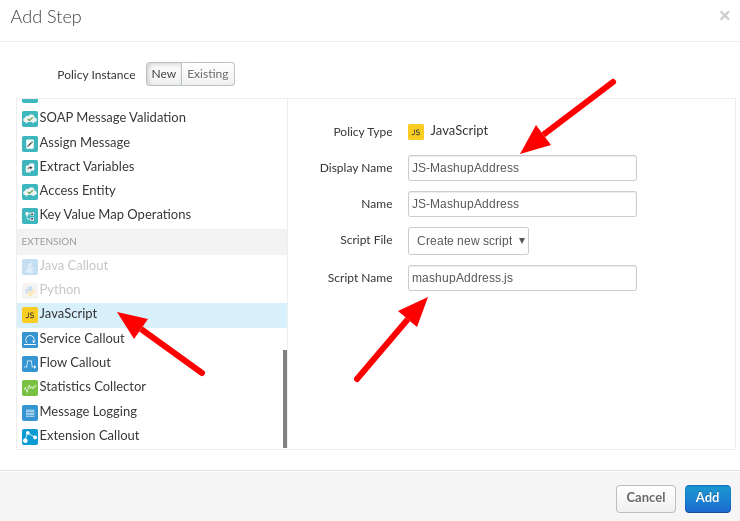
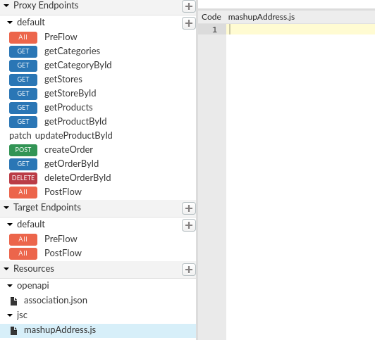
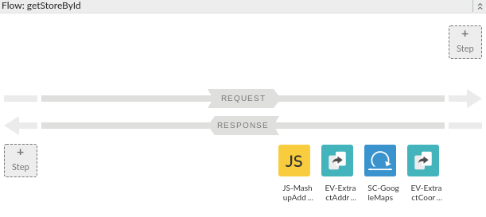
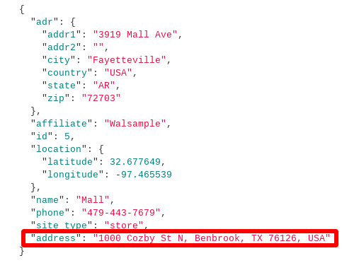

Sometimes you may need to invoke multiple services to enhance the details of the data returned by the target, or to offer new options to the clients of the API. In this module we'll see how you can invoke an API based on data received from the backend and combine it with the response.
What you'll learn
- How to invoke other APIs and combine the responses
What you'll need
- Your proxy created in the previous lab
Use case
You want to allow the option to the clients of the API to choose the response format.
Download a working solution to the previous lab as a proxy bundle ZIP file:
Prerequisites:
- Target Server: TS-Retail (instructions in lab 2)
- Product, Developer and App (instructions in lab 3)
- Key Value Map: ProductsKVM (instructions in lab 6)
Find your spec ID. When you open your spec in the spec editor, the link will be in this format, with the spec ID at the end of the URL:
https://apigee.com/organizations/YOURORG/specs/folder/FOLDERID/editor/YOURSPECID
Navigate to your proxy and upload the bundle as a new revision:

Select the association.json resource. Replace YOURORG and YOURSPECID with the values from the spec URL.

Once updated, the association.json should look something like this:
{
"url": "/organizations/apigeek-eval/specs/doc/207966/content"
}
Click Save to save your proxy. Open the Deployment menu, and check the deployment status. Click on test to deploy this revision of the proxy.

Test will be green when it is deployed.

- Make an API call to Google Maps API
- Combine the responses
The API we'll be using from Google Maps requires the coordinates of the location to be passed as a query parameter.
These coordinates come back on the response we get from the backend.
Example:
GET /v1/retail/stores/mall
{
"adr": {
"addr1": "3919 Mall Ave",
"addr2": "",
"city": "Fayetteville",
"country": "USA",
"state": "AR",
"zip": "72703"
},
"affiliate": "Walsample",
"id": 5,
"location": {
"latitude": 32.677649,
"longitude": -97.465539
},
"name": "Mall",
"phone": "479-443-7679",
"site_type": "store",
}We need to extract the data that comes in $.location.latitude and $.location.longitude.
Select the getStoreById flow in the Proxy Endpoint, and click on the ‘+ Step' on the response side (bottom portion)

Look for the Extract Variables policy. Change the display name:
EV-ExtractCoordinates
Click Add:

In the policy configuration, use the following:
<ExtractVariables async="false" continueOnError="false" enabled="true" name="EV-ExtractCoordinates">
<JSONPayload>
<Variable name="lat">
<JSONPath>$.location.latitude</JSONPath>
</Variable>
<Variable name="lng">
<JSONPath>$.location.longitude</JSONPath>
</Variable>
</JSONPayload>
<Source clearPayload="false">response</Source>
</ExtractVariables>This will create 2 variables with the data we need: lat and lng.
Following the same steps as before, we'll now add a ServiceCallout policy that will execute after the ExtractVariables policy. Change the name and add the policy:
SC-GoogleMaps

The service callout will call the Google Maps API, passing our latitude and longitude variables as a query parameter called latlng, as well as passing the Google Maps API key in the key parameter.
We'll use this key:
API-ENG-TRAINING-GEOCODING-KEYand this URL:
https://gcp-cs-training-01-prod.apigee.net/googleapis/maps/api/geocode/jsonThe policy should look like this:
<ServiceCallout async="false" continueOnError="false" enabled="true" name="SC-GoogleMaps">
<Request>
<Set>
<QueryParams>
<QueryParam name="latlng">{lat},{lng}</QueryParam>
<QueryParam name="key">API-ENG-TRAINING-GEOCODING-KEY</QueryParam>
</QueryParams>
<Verb>GET</Verb>
</Set>
</Request>
<Response>calloutResponse</Response>
<HTTPTargetConnection>
<URL>https://gcp-cs-training-01-prod.apigee.net/googleapis/maps/api/geocode/json</URL>
</HTTPTargetConnection>
</ServiceCallout>The response from the service callout API request will be stored in an object called ‘calloutResponse'.
From the response from Google Maps, we need to use the data located in $.results[0].formatted_address and we'll be adding that formatted address to our backend response.
For that, we first need to extract the data we need via another Extract Variables policy named:
EV-ExtractAddress

This policy should look like:
<ExtractVariables async="false" continueOnError="false" enabled="true" name="EV-ExtractAddress">
<IgnoreUnresolvedVariables>true</IgnoreUnresolvedVariables>
<JSONPayload>
<Variable name="address">
<JSONPath>$.results[0].formatted_address</JSONPath>
</Variable>
</JSONPayload>
<Source clearPayload="false">calloutResponse.content</Source>
</ExtractVariables>It will create a new variable called ‘address' with the data we need from the Google Maps response. Note how the ‘Source' configuration in this policy points to the response object created by the Service Callout policy, and references its content, which is the payload. More details on this can be found in our documentation here.
Our last step in this process is to combine the data from the 2 separate requests (one to the backend, one to Google Maps API). We'll do that via a Javascript policy.
Set the Display Name:
JS-MashupAddress
and the Script Name:
mashupAddress.js

This will also create a new file under Resources/jsc. Select the newly created empty JavaScript file.

This will bring up a code editor for you to update the javascript code itself.
Use the following code to combine the responses:
var address = context.getVariable('address');
// parse the response payload into an object
var responsePayload = JSON.parse(context.getVariable('response.content'));
try{
// add address to the backend response
responsePayload.address = address;
// convert the response object back into JSON
context.setVariable('response.content', JSON.stringify(responsePayload));
context.setVariable('mashupAddressSuccess', true);
} catch(e){
print('Error occurred when trying to add the address to the response.');
context.setVariable('mashupAddressSuccess', false);
}context.getVariable() allows us to retrieve flow variables, and context.setVariable() allows us to set them.
Your flow should now look like this:

Save and deploy your proxy and test it with the following request:
URL:
GET /stores/mallHeader:
apikey: {key of application}Verify the response. A new ‘Address' attribute has been added.

You have successfully created a mashup of data from two different services in your API.